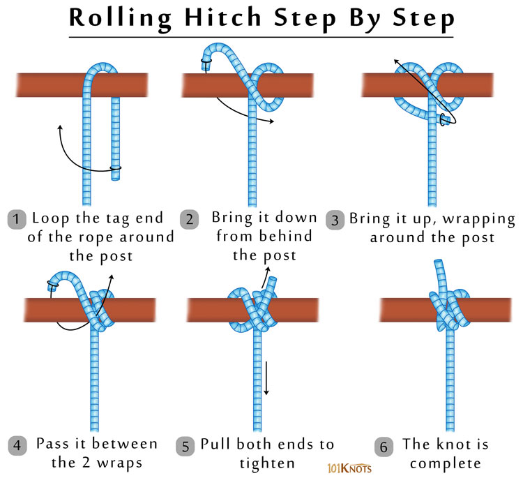

The rolling hitch adds a leg to an existing line. This hitch is the basic knot behind a taut line hitch, but it can be added to any existing line. The rolling hitch was often used historically to hook more dogs to a dog sled main line.
How to tie a rolling hitch:
Wrap the free end of one rope around the main rope to create a half hitch. Make a second half hitch and then wrap over the entire knot to finish with a final half hitch to the other side from your starting place.
